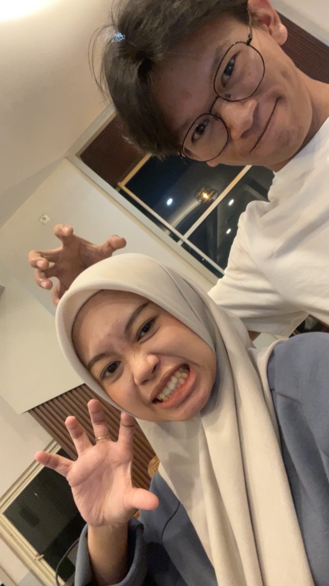

Arudji Hermatyar, S.Kom
Mahasiswa PPG Prajabatan Informatika | Universitas Islam Makassar
Visi
Menjadi pendidik yang mampu menuntun kodrat murid, menghidupi nilai-nilai Pancasila, serta menciptakan pembelajaran Informatika yang mendalam, inklusif, dan menyenangkan di era digital.
Misi
- Menerapkan pembelajaran berdiferensiasi.
- Mengintegrasikan teknologi dalam kelas.
- Menjadi teladan karakter yang baik.
UAS Praktik Mengajar Mandiri
SMAN 22 Makassar
Mata Pelajaran
Informatika
Kelas
XII
Materi
Percabangan (If-Else)
Analisis Rancangan/Perencanaan Pembelajaran
Konteks & Tujuan: Modul Ajar ini dirancang untuk kelas XII SMAN 22 Makassar pada materi Percabangan (If-Else) dalam Python. Tujuannya agar murid mampu menyusun logika percabangan melalui aktivitas pemecahan masalah menggunakan media fisik.
Kelebihan: Modul ini menerapkan model Problem-Based Learning (PBL) dan Experiential Learning. Langkah pembelajarannya sangat runtut, memadukan ceramah interaktif dengan aktivitas kinestetik. Asesmen dirancang holistik (Self, Peer, Guru, Tes).
Kekurangan: Alokasi waktu 3 JP (120 menit) sangat padat untuk aktivitas live coding di Labkom. Jika labkom tidak siap, guru harus memverifikasi manual yang memakan waktu lebih lama.
Kajian Teori: Penyusunan modul ini mengadopsi prinsip Backward Design (UbD) dari mata kuliah Pembelajaran Mendalam, di mana tujuan dan asesmen ditetapkan sebelum merancang aktivitas. Urutan logis materi mencerminkan penerapan Taksonomi Bloom (dari pemahaman konsep hingga praktik).
Analisis Materi Pembelajaran
Konteks: Materi Percabangan (If-Else) dengan studi kasus menentukan bilangan ganjil/genap.
Kelebihan: Materi disusun berjenjang (hierarkis). Dimulai dari pengenalan konsep dasar, sintaks (titik dua, indentasi, operator ==), hingga implementasi dalam live coding. Penggunaan analogi sederhana ("Jika hujan, bawa payung") sangat membantu pemahaman abstrak.
Kekurangan: Studi kasus tunggal (ganjil/genap) mungkin terlalu sempit untuk menguji pemahaman tingkat tinggi (C4). Murid yang cepat paham bisa bosan.
Kajian Teori: Analisis materi ini sejalan dengan Teori Perkembangan Kognitif Piaget dan Vygotsky (ZPD). Materi diberikan secara bertahap dengan dukungan (scaffolding) berupa kartu kode, memudahkan murid mengonstruksi pengetahuannya sendiri.
Analisis Media Pembelajaran (Python Puzzle)
Media yang Digunakan: Python Puzzle (Parsons Problems Fisik), Kartu Distractor, dan Kartu Hint.
Kelebihan: Sangat interaktif dan menyenangkan. Mendorong kolaborasi (kerja berpasangan) dan penalaran kritis karena murid harus membuang kode salah. Strategi hint (maksimal 2) sangat baik untuk melatih kemandirian tanpa rasa takut gagal.
Kekurangan: Memerlukan waktu persiapan (merakit kartu) sebelum kelas. Manajemen kelas saat pembagian kartu dan lem bisa menjadi sedikit riuh jika tidak dikondisikan dengan baik.
Kajian Teori: Media ini menerapkan prinsip Concrete to Abstract dan Cognitive Framing (materi Pola Pikir Bertumbuh). Kartu hint berfungsi sebagai Scaffolding (Vygotsky), sementara kebebasan merangkai kartu tanpa error sistem menciptakan lingkungan belajar yang aman (safe learning environment).
Analisis Video Pelaksanaan Praktik Mengajar
Konteks & Tujuan: Video rekaman pelaksanaan praktik mengajar mandiri materi If-Else menggunakan Python Puzzle.
Kelebihan: Video menunjukkan penguasaan kelas dan interaksi dua arah yang baik. Guru mampu mengaitkan analogi kehidupan sehari-hari dengan sintaks pemrograman.
Kekurangan: Berdasarkan pengamatan video, masih ada beberapa murid di barisan belakang yang perlu didekati secara personal agar lebih aktif berdiskusi dengan pasangannya.
Kajian Teori: Praktik ini mencerminkan penerapan Teori Belajar Sosial (Bandura) dan Peer-Assisted Learning (tutor sebaya), di mana murid saling berinteraksi dan mengoreksi pemahaman pasangannya. Refleksi video ini juga mengadopsi kerangka 5R (Reporting, Responding, Relating, Reasoning, Reconstructing).
Analisis Kegiatan Non-Mengajar
Kegiatan: Install Aplikasi di Labkom (Laboratorium Komputer).
Kelebihan: Kegiatan ini memberikan pengalaman berharga dalam manajemen sarana prasarana pendidikan. Melatih ketelitian, kesabaran, dan koordinasi dengan pihak laboran sekolah.
Kekurangan: Memakan waktu yang tidak sedikit dan terkadang terkendala oleh spesifikasi komputer yang tidak seragam.
Kajian Teori: Kegiatan ini mengimplementasikan konsep Asset-Based Thinking (fokus pada optimalisasi sarana yang ada) dan kolaborasi (partnership) yang dipelajari pada mata kuliah Pembelajaran Mendalam.
Instrumen Penilaian & Analisisnya
Instrumen: Rubrik Penilaian Praktik, Lembar Observasi, Self-Assessment, dan Peer-Assessment.
Kelebihan: Penilaian dirancang holistik dan autentik (proses dan hasil). Adanya penilaian antar teman dan diri sendiri melatih kejujuran dan refleksi murid.
Kekurangan: Penilaian peer dan self berpotensi subjektif (kurang objektif) jika murid tidak memahami kriteria rubrik.
Kajian Teori: Mengadopsi konsep Assessment as Learning dan Assessment for Learning dari mata kuliah Pembelajaran Mendalam, di mana asesmen tidak hanya mengukur nilai akhir, tetapi menjadi alat untuk mendorong proses belajar (formatif).
Refleksi Akhir Praktik Mengajar
Filosofi Mengajar: Saya meyakini filosofi Ki Hadjar Dewantara bahwa guru adalah "pamong" yang bertugas menuntun kodrat alam dan kodrat zaman murid. Dalam konteks Informatika, saya tidak ingin murid hanya menghafal sintaks, tetapi menuntun mereka untuk memahami logika di baliknya.
Model Guru yang Dituju: Guru yang reflektif dan adaptif, yang mampu merancang pembelajaran berdiferensiasi dan inklusif. Guru yang tidak hanya mentransfer ilmu, tetapi menghidupi nilai-nilai (seperti kolaborasi dan kejujuran) dalam kelas.
Kekuatan (Strength): Kemampuan merancang media pembelajaran inovatif (Python Puzzle) yang berhasil mengubah materi abstrak menjadi aktivitas kinestetik yang menyenangkan. Saya juga berhasil membangun suasana kelas yang aman untuk mencoba.
Kelemahan (Weakness): Manajemen waktu. Pada sesi presentasi dan evaluasi, waktu banyak tersita sehingga saya harus mempercepat penutup. Pengawasan terhadap murid di barisan belakang juga masih kurang optimal.
Rencana Tindak Lanjut (RTL)
- Membuat timer visual di layar Smartboard untuk mengontrol waktu setiap fase pembelajaran.
- Menerapkan strategi proximity control (berjalan mendekati barisan belakang) lebih sering saat murid bekerja kelompok.
- Mengintegrasikan live coding menggunakan Python IDLE secara penuh di Labkom pada pertemuan berikutnya.